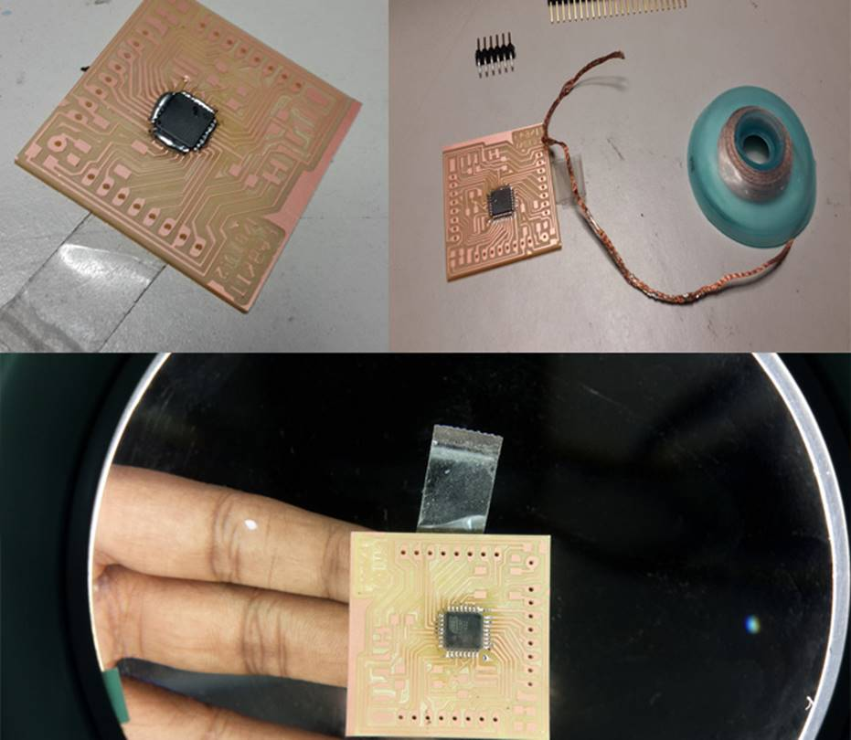
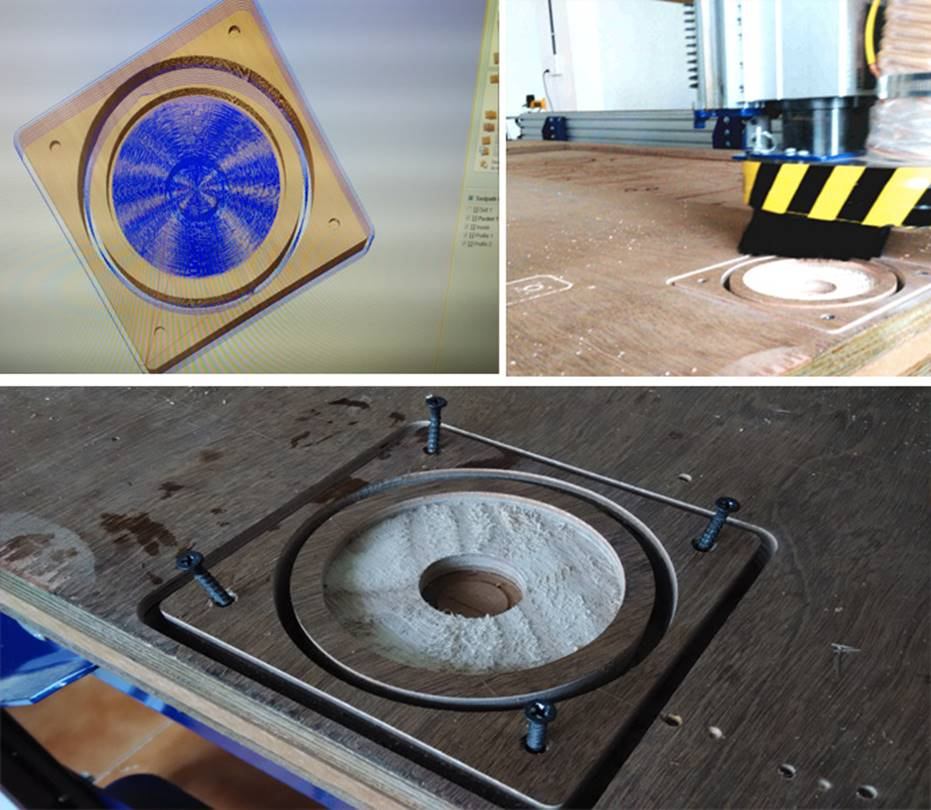
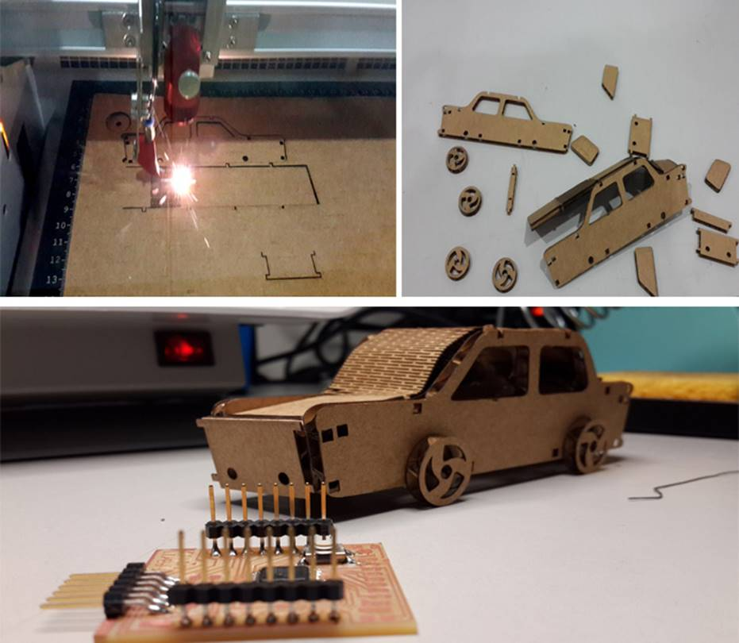
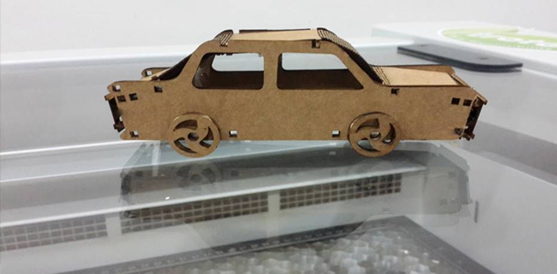

WEEK 4:
Casting the Makers: The end is but a
new beginning..
This week our dear instructor Franc had left to Cochin to
spend a week at the Fab Lab there. We were fortunate to have the guidance of Luciano
Betoldi, an amazing designer and the 2nd
second Fab Guru allotted to the programme.
DAY 1
Luciano started by introducing himself and also us to the
world of technical of design. He also told us that we could take up something
to do as a project in this ultimate week of the Pre Fab Academy Programme. We needed to have a clear idea about what to
make, how to make it and in case of added design, how to go about the design
specifications as well.
Design Brief
Today Louisiano explain about what
a design brief is all about.
Fabduino

1.
Apply too much Solder 2. Use Quick Braid to
remove excess solder 3. Closer view after removing excess solder
Taming the Rhinoceros:
Using Rhino Design Software
Today it was time to meet a distant and friendlier cousin of
Antimony’s.
The software was called Rhinoceros 3D. The software can be
used in designing for Laser cutting, milling wax and 3D printing. This was one
of the easiest softwares to install because today I
was using a Macbook, download and zip and
install(make sure you have Version 10.9.5 or above though, I needed to update
right then).It has a kickass design interface that lets up
see the design from different perspectives: top, bottom, side and perspective. We
can also perfectly curve corners, extrude elongate and redesign with ease. I
found this even more interesting than the lesson on Antimony.
We designed a few cylinders and other shapes. Louisiano created this design and edited it quite a bit to
show us the applications of the software:
Shopbot
Till this day we hadn’t really used the Shopbot
in action at the Pre Fab Academy programme. Louisiano decided to break that fast the Shopbot was on and drew a design (within seconds like he
usually does) on Rhino and exported it(.dxf file).

a.
Rhino Design b. Shopbot
Cutting c. The Final View
This was opened in the Shopbot
Software: VCarve Pro and defined the profiles for
drilling and cutting, and also specified the drill bit used. On passing the
same onto the job control on Shopbot : Voila, the job was done!
Project: EMF Detector
For the project, Louisiano
initiated an exercise where we were to bring up 2 or 3 ideas on something,
which we wanted to make. From this we were to identify which is the most
interesting, practical and also what can be done in the fablab.
Two ideas of my mine were:
A)
Taking cues from Hollywood and Bollywood movies
where trains or airplanes are blown up using cellphones I was looking at
creating a communication system based on similar lines. A one-side
communication would suffice. Here I was looking at putting it to a good use.
My
utility: I travel a bit and
sometimes when I go out of town, I would like to leave the lights on at home So, a mechanism using sensors, that switches the lights on
OR off alternatively, when I make a call to this phone. My options were 1) The
screen, which blinks or lights up on a call can be detected by using a light
sensor or 2) the phone would vibrate on receiving a call. Using one of the
above sensors, through a basic model (inexpensive Nokia) phone I could remotely
switch ON or OFF the lights at home. This would work from any basic model
phone, and needed no smart phone (as a precursor to/ as opposed to the current IoT technologies).
B)
EMF Detector: Something utilitarian. In the
absence of a multi-meter not working in the lab this can be used. Any electric
charge passing through a medium causes the formation of an electro
magnetic field. Also other uses include you could carry it around in
your pocket owing to small size, and most importantly it is heard they have
been used by Ghostbusters in the West to detect paranormal activity. An LED
bulb is to be used to detect the presence of the electromagnetic field.
Laser Cutter
assignment
Though I had cut a board & engraved the grid (a milling
board for Modela) along with others, to have the
experience of another one, I decided to laser cut a car. This car can be
assembled or disassembled. Following are the pictures my car
:

After final assembly

Catching up and
documentation
Since I joined the Pre fab academy programme
a few days late, I had some catching up and documentation left over. So I
finished off that.
ADDITIONAL TAKE BACKS
A few of the intangible values and propositions I learnt in
the past few weeks at the Fab Program were:
·
You can reuse anything; you just need to know
where it goes and what it does.
·
Documentation is the key. When you need to come
back, refer a scenario, teach another person or even impart what you’ve learnt
at the lab this personal rendition of the Fablab
experience is the key.
·
Deliver! No matter what. (Taking cues from
Franc’s UK Maker competition which he won while at Fablab
Trivandrum)
·
Tinker ability – something we all have, but take
time to identify and bring out. Nurture it!
·
A dull job slackly done is twice as dull – there
are some portions of a particular process or project that one might find
boring, but still there is much to be learnt on the process being pursued with
much care and attention.
·
Knowledge (much like happiness) is real only
when shared. The Fablab fostered an unwritten sense
of teamwork and understanding where people who were good at something help
others who weren’t and likewise and knowledge was spread without inhibitions.
Tat Tvam
Asi
Tat Tvam Asi,
the cardinal message that claims to influence Indian ethos – translates as That Thou Art, or You
Are That, suggests that we all are one, the knowledge we acquire, our
collective wisdom, & life force: form One, One single consciousness.
Knowledge (much like happiness) is real only when shared
(Note: Tat Tvam Asi was an Upadesha
Vakya, as it instructed a seeker the nature of
Brahman, the ultimate truth)